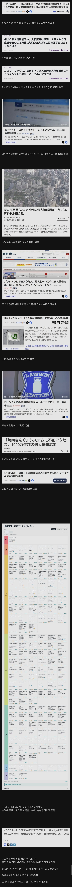

이와중에 진짜 난리난 일본 근황 ㄷㄷ
댓글
근데 비슷한 시기에 대량 유출이 발생하는거 보면 AI 영향이 클듯?
저러면서 네이버 라인한테 지랄한겨?
네이버는 해킹에 뚫린거 이전에
①개발환경이랑 메인 서비스 환경을 하나로 합쳐놓는 개븅신 짓을 하고
②일본이 고치라고 지적했지만 고쳤다고 입만 털고 방치하다가 그 루트 그대로 또 털리는 개븅신 짓을 해서 그런거임
조사해서 이정도 븅신짓을 한 게 맞으면
소니처럼 기업 구조가 일본 정부 입맛에 맞게 개조당하고
정기적으로 정부에 보고해야하는 등 정부 관리하에 놓일거임
참고로 네이버가 같은 짓을 유럽에서 저질렀으면
자회사 이사진 교체정도가 아니라
네이버 본사의 전세계 매출 4% 과징금에
네이버 본사에 유럽에서 파견한 감사인원 상주임
둘 중 하나라도 거부하면 영구 유럽내 영업금지
뭐야 이 말대로면 네이버 개병신짓한거네 그리고 국뽕마케팅탑승한건가
참고로 다들 분개하는 지분 이동도 없었고
라인에서 자리 차지하고 돈은 받아가면서 네이버쪽 조율은 전혀 안 하는 네이버측 이사가 물러나는 것으로 정리 됨
우왕 똑똑한 개붕이 멋있엉
네이버는 아예 데이터베이스를 중국에 놨었고
심지어 고치라고 사전경고까지 했었는데도 털린 거라…
뭐 우리나라 은행 털린것들도 그 나라 오픈소스 해킹툴이라는 말도 있단데
휴~ 이번에는 안털렸잖아?
동조선 이새끼들...!
대해킹의 시대 사이버펑크의 봄날은 온다.
우린 그나마 피해가 적었나보네
그냥 우리가 모르고 있는 걸수도 ㅋㅋㅋ
인구대비로 따지면 조선에 비하면 개좆밥인데 근들갑뭐지 통신사가 다 털리는 갓한민국에 비하면 가소롭노ㅋㅋ
닉값ㄷㄷ
와... 그럴 수도 있겠네
이 새끼들 우리나라도 ㅈㄴ털었잖아
막 김정은한테 갖다주겠다 ㅇㅈㄹ떨고
개인정보란건 이제 세상에 존재하지 않아
서양도 털리나?
개인정보라는 말 말고 공공정보라고 하자
이런놈들이 라인탓을 하며 쳐먹었다는거지?
개인정보 뭐 인당 300원하냐? 개붕이들 꺼는 50원도 안할거같노
50원이나 해?
비슷하구나
이렇게 정보유출이 잦아진다? 우연은 아니야 뭔가 일어나고있다
이건 추측이긴 한데....
남들 다 유출되니까 예전에 유출됐던거 내부에서 쉬쉬하고 있던거 이때다 싶어서 줄줄이 공개하는거 아닐까 생각함
저렇게나 털리는거보면 그나마 한국이 잘 막은 셈인가 싶기도 하고
우리나라는 온국민이 다 털리지 않음?
요즘 ai로 해킹하는 사례가 많아서 는 것도 있긴 할 듯. 이제는 진짜 취약점 이미 나온 건 필수로 다 패치 해야되는 시점
전부 종이문서로 처리했으면 털릴 일이 없았을 것
동조선 새끼들도 답이없네
일본에서 신분증 1티어가 운전면허증인데
타임즈카 이 새끼들이 운전면허증 사진 털리는 바람에
금융 관련해서 본인인증 개빡세짐
업데이트를 안하면 보안은 그냥 뚫림.
일본은 차세대 사업 같은거 잘 안하고 10년전, 20년 전 시스템도 그냥 돌리잖아.
JAVA 6 쓰는 시스템 같은거 있으면 그냥 AI가 알짤딱깔센으로 이미 보고된 취약점 이용해서 뚫어버리는 거지.
우리나는 쿠팡, 통신사(skt, kt, lgu+) 여러 업체 및 기관 털려서 거의 뭐 5000만 국민 정보 공공재 됐는데 저긴 그래도 양호하네
동조선 wwww
저것도 AI로 털린건가?